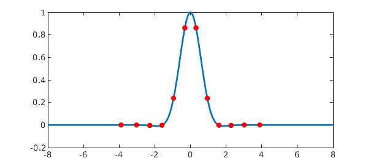

1. A simple example
Hermite (more fully Gauss-Hermite) quadrature is a quadrature method for integrands of the form $\exp(-x^2) f(x)$ on the real axis, where $f$ is smooth. It is a classical subject, and surely thousands of people (including many physicists) have used Hermite quadrature. Nevertheless it is curious how little literature there is on its practicality and convergence rate as a numerical method, compared with other approaches such as a simple trapezoidal rule.
Here is an example showing that Hermite quadrature can be amazingly efficient. We take the function $g(x) = \exp(-x^2) \cos x$,
ff = @(x) cos(x); g = chebfun(@(x) exp(-x.^2).*ff(x), [-inf,inf]);
whose integral is
format long, format compact sum(g)
ans = 1.380388447043143
This matches the exact answer in all digits displayed
exact = sqrt(pi)*exp(-1/4)
exact = 1.380388447043143
Chebfun has computed the integral by methods that are not our concern here. Even staying in the Chebfun context, one may note that because the integrand decays so rapidly to zero, there is no need in practice to use an infinite interval. For example, here is what we get if we integrate $g$ over $[-6,6]$:
sum(g{-6,6})
ans = 1.380388447043143
Now let's integrate $g$ with Hermite quadrature, calling the Chebfun code hermpts to compute the nodes and weights. Here are the errors for $n = 1,\dots,12$ points:
disp(' n error')
for n = 1:12
[s,w] = hermpts(n);
In = w*ff(s);
err = In - exact;
fprintf('%3d %19.15f\n',n,err)
end
n error 1 0.392065403862373 2 -0.032889983326330 3 0.001644624344904 4 -0.000058689881887 5 0.000001628892514 6 -0.000000036992409 7 0.000000000710935 8 -0.000000000011843 9 0.000000000000174 10 -0.000000000000002 11 0.000000000000000 12 -0.000000000000000
All you need are 11 or 12 points to get full precision! And since $g$ is even, you only need half as many function evaluations as that -- an effect that carries over to many applications where the integrand may be expensive to evaluate but known to be even.
Here's a figure
plot(g{-8,8},'linewidth',2)
hold on, plot(s,g(s),'.r','markersize',16), hold off

Let's compare this efficiency with the trapezoidal rule. As has been known since the days of Aitken and Turing, the trapezoidal rule converges exponentially as a function of $1/h$, where $h$ is the grid size, for analytic functions on the real axis provided they satisfy modest decay conditions at $\pm \infty$; see [1]. Formally the rule involves infinitely many sample points, but for a function of the Hermite form, one can truncate at a small value $\pm d$.
In work not yet published, we have derived an optimal choice of $h$ for this method. Applied to this particular function, the optimal choice is $$ h = (-1 + \sqrt{1 + 8\pi n} )/2n $$ Let's try it!
disp(' n error')
for n = 3:3:24
h = (-1+sqrt(8*pi*n))/(2*n);
d = (n-1)*h/2;
s = linspace(-d,d,n);
In = sum(h*g(s)); % trapezoidal sum
err = In - exact;
fprintf('%3d %19.15f\n',n,err)
end
n error 3 0.042363958855155 6 -0.000513739182282 9 0.000007261885988 12 -0.000000082766157 15 0.000000000965252 18 -0.000000000011277 21 0.000000000000119 24 -0.000000000000001
Beautiful convergence again! -- but Hermite is about twice as fast.
Large n?
Thanks to recent work by Townsend, Trogdon, and Olver [1], Chebfun can compute Hermite quadrature nodes and weights for very large values of $n$ with astonishing speed. For example,
tic, [s,w]= hermpts(1000); toc tic, [s,w]= hermpts(10000); toc tic, [s,w]= hermpts(100000); toc
Elapsed time is 0.018391 seconds. Elapsed time is 0.007059 seconds. Elapsed time is 0.047509 seconds.
This raises questions. Most of the points in these large-$n$ formulas correspond to values of $x$ where $\exp(-x^2)$ is very small. For example, with $n = 10000$, here is the fraction of quadrature nodes for which $\exp(-x^2)$ is smaller than machine precision:
n = 10000; s = hermpts(n); tail_points = s( exp(-s.^2) < eps ); format short ratio = length(tail_points)/n
ratio =
0.9460
Perhaps there are applications where Hermite quadrature in such a regime makes sense, but we suspect they are rare. Indeed, when $n$ is large, Townsend et al. propose to throw away most of the quadrature points; they call this process "subsampling".
Since this example was initially drafted, an analysis has shown that indeed, for large $n$, Hermite quadrature is far less efficient than chopping to a finite integral (or more precisely one whose width grows in proportion to $n^{1/3}$), then using a simple formula like Gauss-Legendre quadrature or the trapezoidal rule. See section 5 of [3].
References
-
A. Townsend, T. Trogdon, and S. Olver, Fast computation of Gauss quadrature nodes and weights on the whole real line, IMA J. Numer. Anal., 2015.
-
L. N. Trefethen and J. A. C. Weideman, The exponentially convergent trapezoidal rule, SIAM Review 56 (2014), 385-458.
-
L. N. Trefethen, Exactness of quadrature formulas, SIAM Review, submitted, 2020.